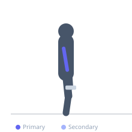
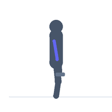

Exercise guide / Overhead Tricep Extension
Overhead Tricep Extension
The overhead tricep extension trains the triceps with the arms raised overhead, which places the long head of the triceps under a full stretch. Because the long head crosses the shoulder joint, training it in the overhead position provides a greater range of motion and stretch compared to pushdowns or skull crushers.
Primary muscles
triceps long head
Secondary muscles
triceps lateral head
triceps medial head
Equipment
Dumbbell (Fixed)
Optional
Cable Machine (High Pulley)


Starting position
- Sit or stand holding one dumbbell with both hands. Press the dumbbell overhead with arms extended. Grip the inner plate of the dumbbell with both hands, thumbs wrapped around the handle.
Setup
- Can also be performed with a cable using a rope attachment set at a low pulley, facing away from the machine.
Steps
- With upper arms vertical and elbows pointing toward the ceiling, lower the dumbbell behind the head by bending the elbows.
- Lower until forearms are approximately parallel to the floor or the stretch becomes significant.
- Extend the elbows to press the dumbbell back to full extension overhead.
Coaching cues
- Keep elbows pointing straight at the ceiling
- Feel the long head of the tricep stretching at the bottom of each rep
Breathing
- Inhale on the descent, exhale on extension.
Range of motion
- Full overhead extension at top, forearms parallel to floor or below at the bottom.
Tempo
- 2-1-2-0
Common mistakes
- Allowing the elbows to flare out to the sides
- Moving the upper arms instead of just hinging at the elbows
Safety
- If the dumbbell is heavy, have someone hand it to you overhead
Training
- hypertrophy: 10–15 reps
- hypertrophy: 3–4 sets
- Rest: {'hypertrophy': 75}